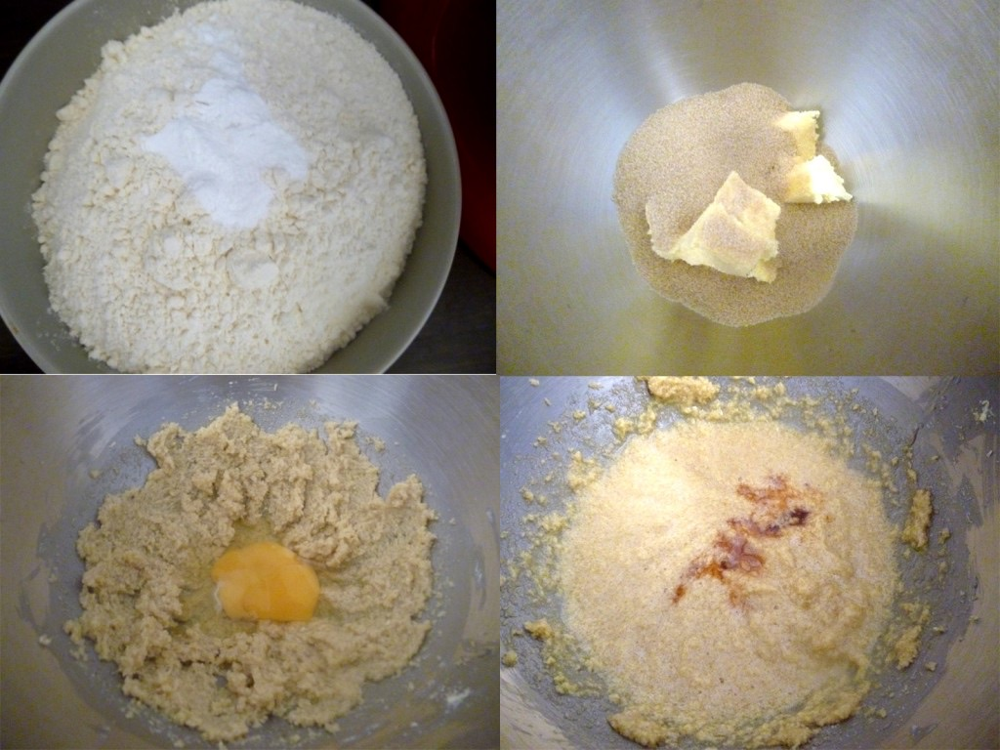
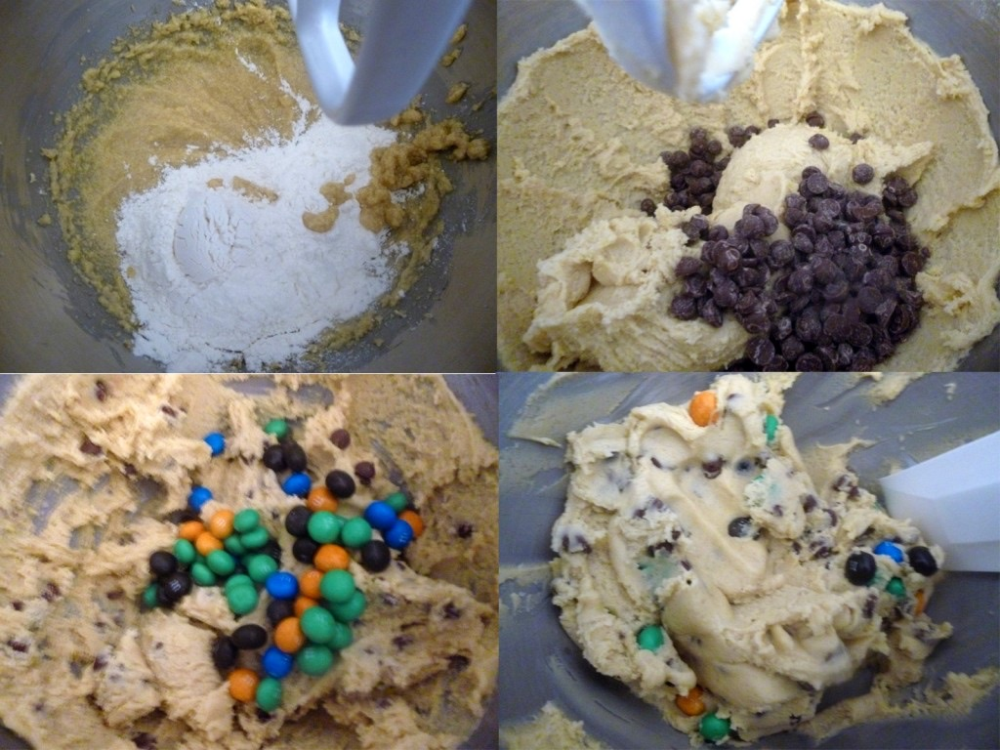
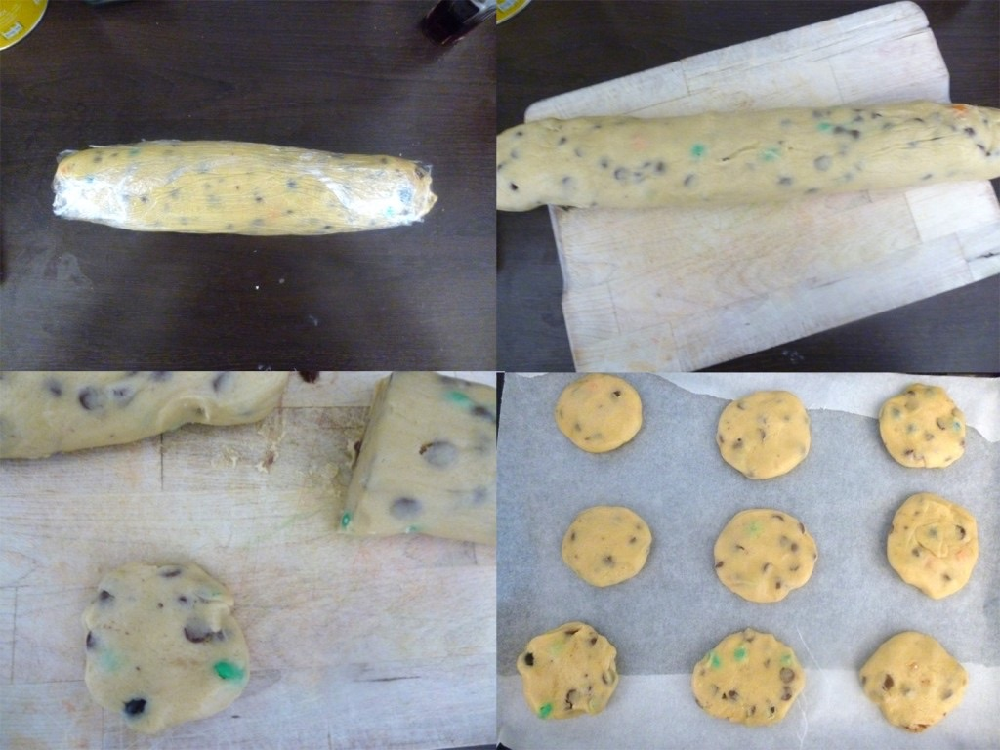
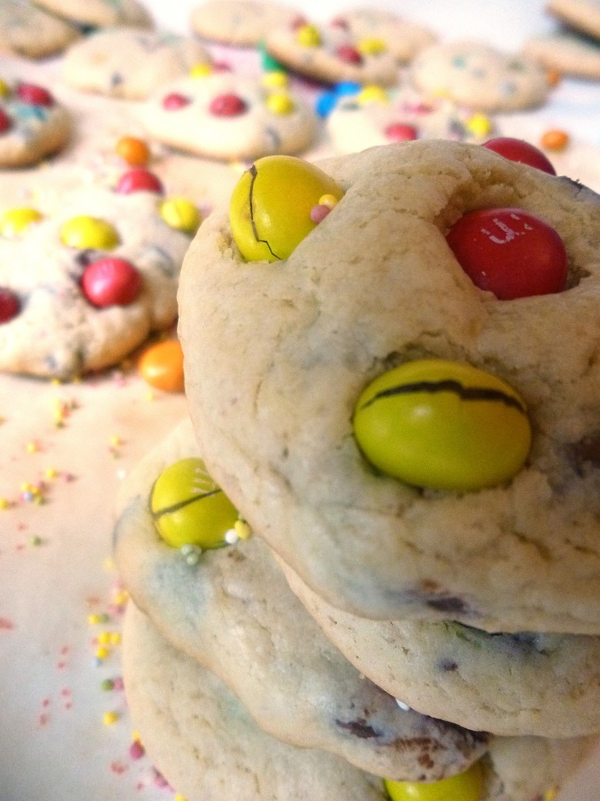
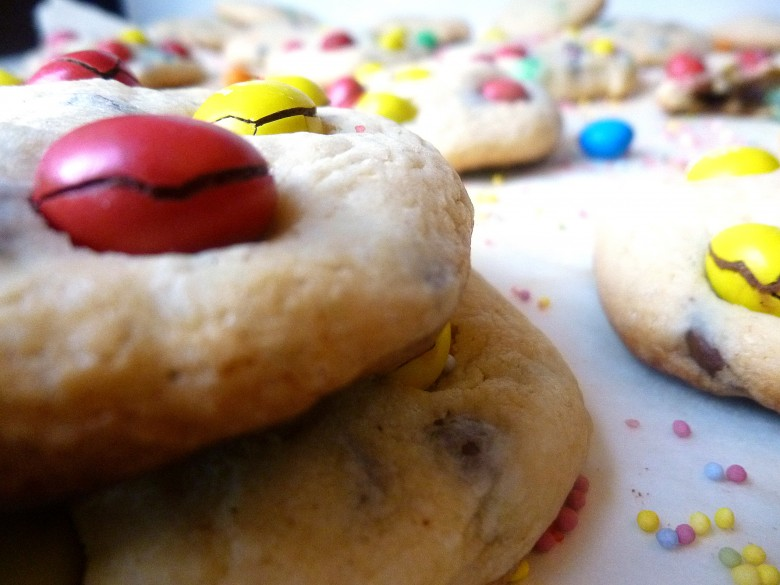

Cookies M&M’s aux pépites de chocolat

Aujourd’hui je partage avec vous une super recette que l’on me demande souvent et que je gardais dans mes petits livres de recettes qui vieillissent maintenant, il s’agit de ma recette de cookies M&M’s et aux pépites de chocolat.
Mon chéri il y a trois jours m’a demandé si je pouvais lui faire des cookies M&M’s. Je vous avouerai que je n’en fait pas tous les jours, à vrai dire, seulement quand il me le demande. Il adore les tremper dans du lait vous aussi vous faites pareil? :O
Bref, moi je les aime et les fait plutôt bien tendres et moelleux que croquants et secs et les enfants en raffolent surtout avec toutes les couleurs des M&M’s!
Les cookies ou « chocolate chip cookie » sont très populaires aux États Unis mais un peu trop sucrés à mon gout alors j’ai revisité cette recette avec un peu moins de sucre ce qui nous correspond davantage à nous les « Européens »^^
Cette recette de cookies M&M’s est ultra facile et rapide est vous assure un goûter réussi!
Ingrédients
- farine - 320g
- oeuf - 1
- cassonade - 180g
- levure chimique - 1 càc
- sucre vanillé - 1/2 sachet
- extrait de vanille - 1 càc
- beurre - 120g
- Pépites de chocolats au lait - 125g
- M&M's - 70-80g pour la pâte à cookies
- M&M's - une grosse poignée
Instructions
- Préchauffer le four à 160°
- Mélanger la farine et la levure chimique dans un bol. Réserver
- Mélanger le beurre et la cassonade dans une jatte jusqu’à obtenir un mélange homogène (environ 5 min)
- Ajouter l’œuf et l'incorporer au mélange
- Ajouter l'extrait de vanille et bien mélanger
- Petit à petit ajouter le mélange farine/levure Il faut obtenir un mélange bien homogène et une pâte assez épaisse,
- Ajouter les pépites de chocolat, puis les M&M's (gardez en pour la déco) Perso j'ai utilisé des M&M's crispy car il n'ont pas la cacahuètes au milieu et je peux donc les incorporer en entier à ma pâte . Si vous préférez ceux avec la cacahuètes je vous conseilles de les écraser avant des les incorporer à la pâte (dans un sachet plastique, enfermer les M&M's puis battez les avec un rouleau à pâtisserie)
- Remuer jusqu'à obtenir une pâte homogène
- Rouler la pâte dans du cellophane afin de lui donner une forme cylindrique
- Une fois la forme obtenue, enlever le cellophane
- Couper la pâte en rondelles. Si ces dernières ne sont pas parfaitement rondes,n'ésitez pas à les reformer avec la paume de la main
- Disposer les maintenant sur votre plaque de cuisson, en respectant un espace entre chacun des cookies car ils gonflent à la cuisson
- Enfourner les pour 8 minutes à 160°
- 2 min avant la fin de la cuisson vous pouvez placer des M&M's sur le dessus des cookies en les enfonçant légèrement.





Les tips de la communauté
Cookies extraordinaires et très gourmands. La recette inspire directement à la réaliser. Variantes testées avec succès avec d'autres ingrédients.
Astuces
- Les M&M's peuvent être remplacés par des noix de cajou avec succès
- La pâte crue est irrésistible - prévoir de la surveillance
- Recette simple mais résultats fabuleux
Variantes suggérées
- Noix de cajou à la place des M&M's
- Autres noix ou pépites selon préférence